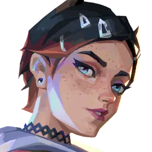
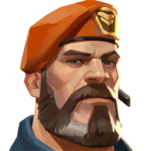
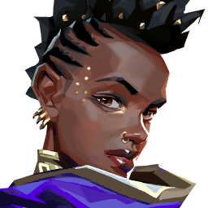

전략가






⚡ 연막을 통한 시야 차단 및 전장 제어 중심의 필수 포지션
└ 진입 및 리테이크 시 적의 사격을 차단하고 아군의 합류 시간을 버는 공성전의 핵심이자, 조합에서 절대 빠질 수 없는 역할군
🔹 1선 단독·메인 전략가 (오멘, 클로브, 브림스톤, 아스트라, 믹스)
· 우수한 고유 연막 성능을 바탕으로 단독 연막 작업을 완벽하게 수행하며 아군을 보조
· 오멘의 시청각 차단 및 순간이동, 브림스톤의 3연막 러쉬 유도 등 뛰어난 전장 조율 능력 보유
· 클로브처럼 타격대 성향을 띠거나 오멘처럼 재미와 변수 창출이 가능한 요원들이 주로 높은 픽률을 기록
🔹 2선 보조·서브 전략가 (바이퍼, 하버)
· 단독 연막 성능은 비교적 낮으나, 장벽 등 강력한 부가 유틸리티를 지닌 하이브리드형 요원
· 주로 주 연막 요원과 함께 기용되어 단독 전략가가 할 수 없는 빈틈과 영역을 보완함
· 바이퍼는 장벽을 통한 영역 압박(감시자 롤), 하버는 방탄 보호막을 통한 강제 돌파(척후대 롤) 수행